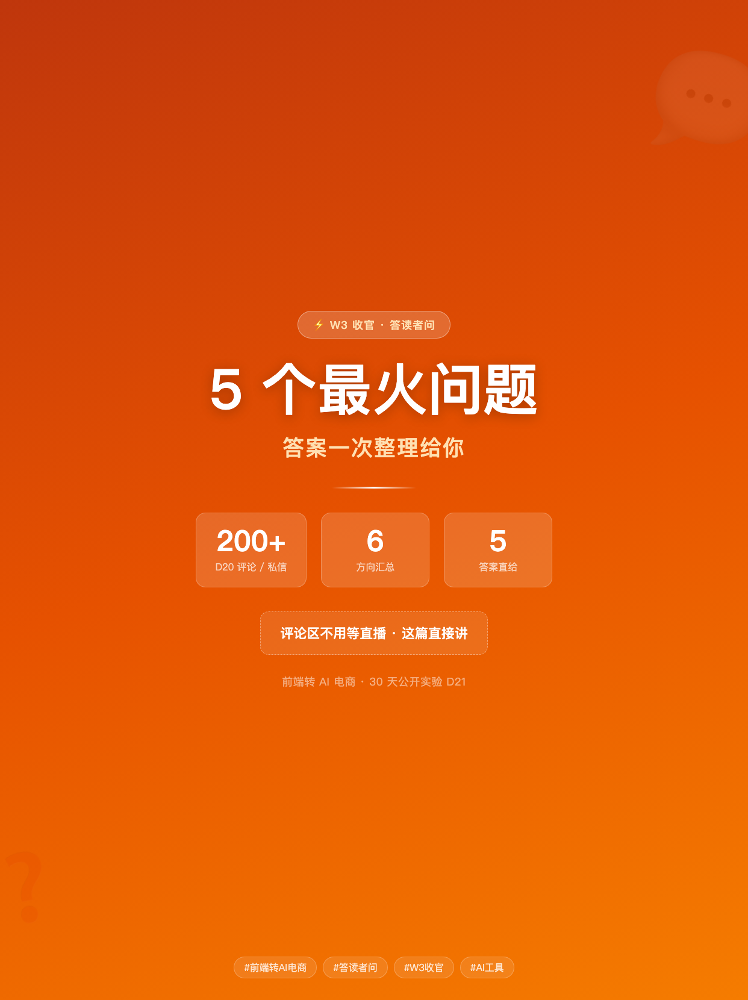
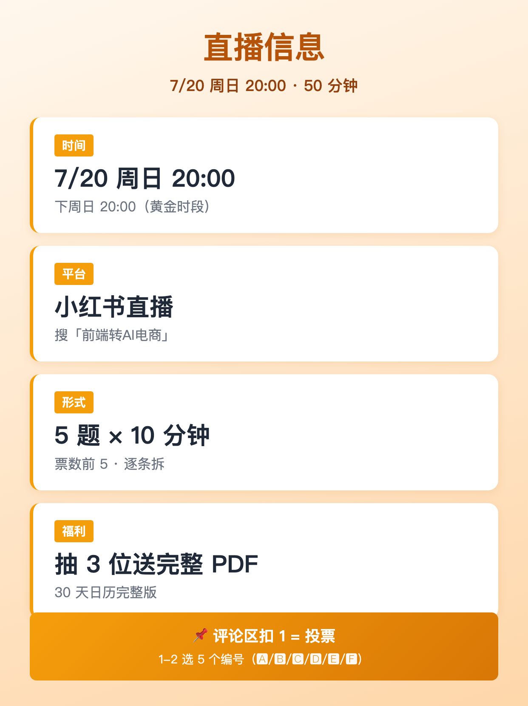
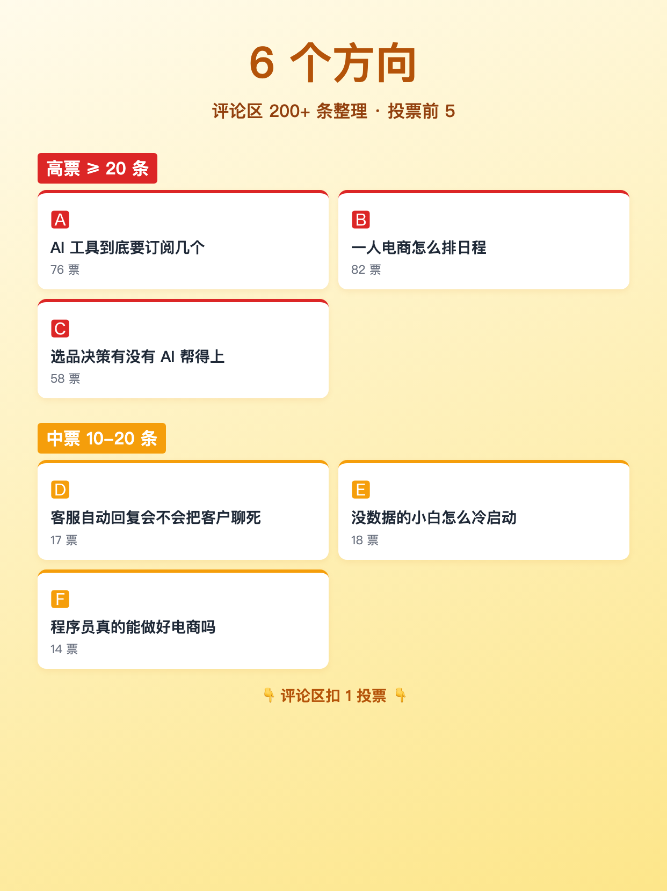
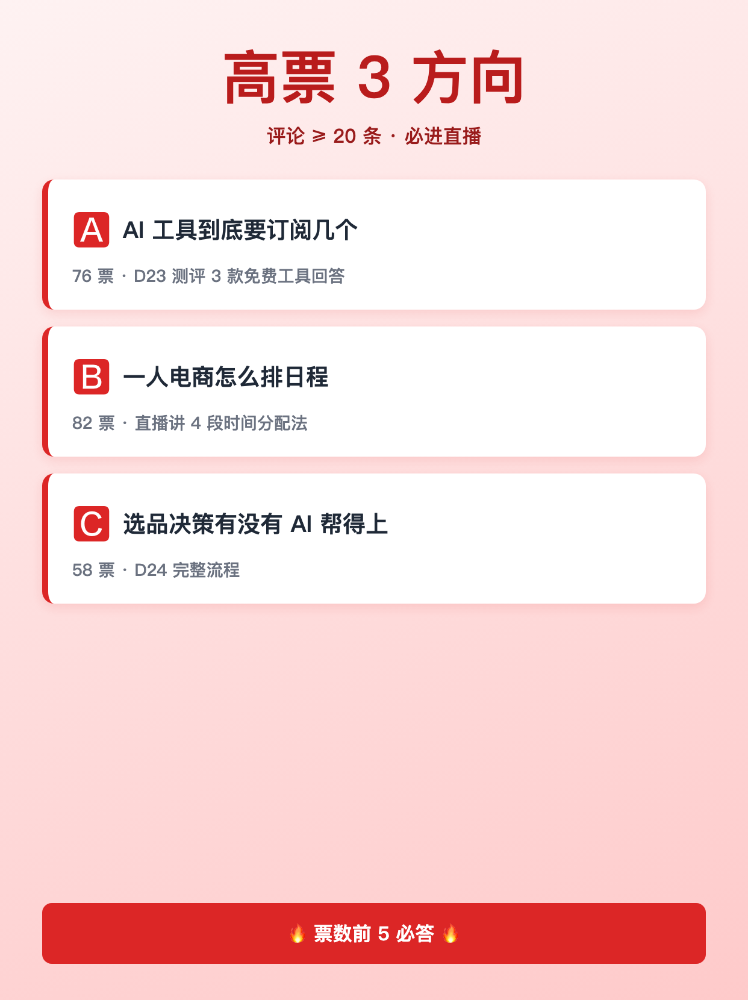
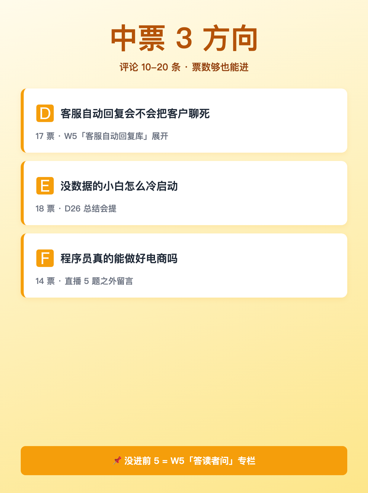
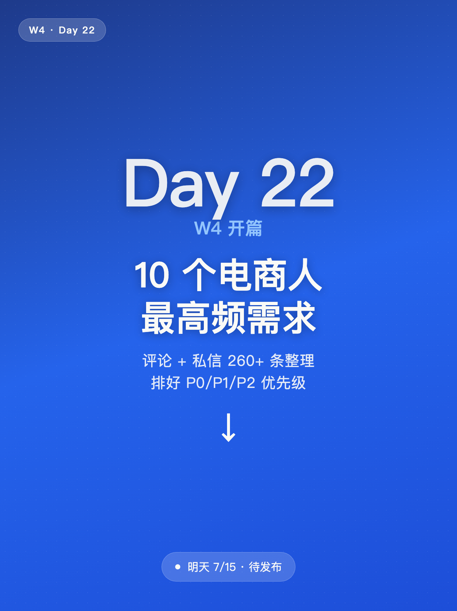

使用说明: 6 张图按顺序上传，标题「评论扣 1，下周直播解答 5 个真实问题」（XHS 上限 20 字 ✓，18 字）。
配图通过 HTML+Chrome headless 截图 1242×1660 PNG 生成（中文 100% 清晰）。






评论扣 1，下周直播解答 5 个真实问题
评论扣 1，下周直播解答 5 个真实问题 ───── 先说结论 ───── D20 那条「忙乱时刻」的笔记发出去， 评论 + 私信收了 200+ 条。 我没空全看，**但你说的我记下了**。 下周抽 5 个最典型的问题，做直播逐条拆。 ───── 直播信息 ───── · 时间:7/20（周日）20:00 · 平台:小红书直播（搜「前端转AI电商」） · 形式:5 个问题 × 10 分钟 = 50 分钟 · 福利:直播中抽 3 位送 30 天日历完整 PDF ───── 5 个问题怎么选 ───── 我整理了评论关键词分布， 按「出现频次 × 紧迫度」排了个榜： 高票方向（评论 ≥ 20 条）： 🅰 AI 工具到底要订阅几个？ 🅱 一人电商怎么排日程？ 🅲 选品决策有没有 AI 帮得上的地方？ 中票方向（评论 10-20 条）： 🅳 客服自动回复会不会把客户聊死？ 🅴 没数据的小白怎么冷启动？ 🅵 程序员真的能做好电商吗？ ───── 你能决定答案 ───── 现在评论里 1-2 选 5 个编号（🅰/🅱/🅲/🅳/🅴/🅵） 票数前 5 = 直播必答 票数没进前 5 = 下下周再加场 ───── 为什么这么做 ───── 30 天实验里我说过一句: 「不评哪个 AI 最聪明,只回答哪套流程适合普通小团队重复用」 **这周评论区就是验证**。 我先听你说， 下周用 50 分钟认真讲给你听。 ───── 不是 5 个就完了 ───── 直播结束后我会做 2 件事： ① 把 5 个问题的回答整理成笔记发出来 ② 评论里没选中的问题 → 留到 W5「答读者问」专栏 **不浪费你评论的每一句话**。 关注我，7/20 20:00 直播见 🌱
#前端转AI电商
#直播预告
#评论区互动
#电商答疑
#W3收官
♡ 收藏
💬 评论
↗ 分享
📋 一键复制
📊 D21 数据复盘
内容定位: W3 收官 · 福利互动型 · 6 方向投票 → 直播 5 选
承接 D20: D20「忙乱时刻」评论区 → D21 收集并排序成 6 个方向 → D22 调研清单 → D23 工具盲测
结构设计: 直播信息（4项）+ 6 方向分高/中票（3+3）+ 互动投票规则 + 5 个问题精选承诺 + W5 答读者问伏笔
评论区互动设计: 1-2 选 5 个编号（🅰/🅱/🅲/🅳/🅴/🅵）= 低门槛选择 → 高评论率 → 票数前 5 = 直播必答
🚀 发布前 15 分钟 SOP
- 打开小红书 App → 创建笔记
- 选 6 张图（封面 1 + 内页 5），按顺序排好
- 选 3:4 竖图
- 标题：评论扣 1，下周直播解答 5 个真实问题（XHS 上限 20 字 ✓，18 字）
- 正文：点「复制正文」按钮粘贴
- 加 5 个标签
- 选发布时间：周一 20:00-21:00（W3 收官 + 投票拉高评论率）
- 发布
📈 发布后 24 小时 SOP
| 时间 | 动作 | 目标 |
|---|---|---|
| 10 分钟 | 自己评论「我先投 🅰 🅲」 | 激活投票型评论区 |
| 30 分钟 | 每条投票评论认真回复（追问 1-2 句） | 评论区密度提升推荐 |
| 2 小时 | 截图保存 D21 数据 | W4 素材 |
| 6 小时 | 看一次数据（曝光/收藏/评论/票数分布） | 判断是否二次推 |
| 24 小时 | 统计票数，确定直播 5 题 | D22 调研清单数据源 |
🎯 Day 21 数据目标
| 指标 | 目标 | 备注 |
|---|---|---|
| 曝光 | ≥ 2500 | 投票型天然高曝光（W3 收官） |
| 收藏率 | ≥ 6% | 投票互动型收藏率偏低，重点是评论 |
| 评论 | ≥ 300 | 投票题（6 选 5）评论率天然高 |
| 涨粉 | ≥ 200 | W3 收官冲一波 + 直播预约 |
| 直播预约 | ≥ 100 | W4 直播基础人数 |
💡 关键设计点
1. 标题 = 互动动作 + 数字承诺
- 「评论扣 1」 = 低门槛动作（用户一秒明白要做什么）
- 「下周直播解答 5 个真实问题」 = 时间 + 数字 + 「真实」信任感
- 字数 18 字，XHS 上限 20 ✓
2. 正文 = 接住 + 排序 + 互动 + 承诺
- 接住 D20（200+ 评论已收，但「你说的我记下了」）
- 直播信息 4 项（时间/平台/形式/福利）
- 6 方向分高/中票（3+3，按评论数排序）
- 互动投票规则（1-2 选 5 个编号，票数前 5 = 直播必答）
- 5 个问题承诺 + W5 答读者问伏笔
3. 配图结构（6 张）
- 图 01 = 封面（橙金渐变 + 大字「5 个问题 · 下周直播」+ 副标「评论区扣 1」）
- 图 02 = 直播信息卡（时间/平台/形式/福利 四项）
- 图 03 = 6 方向总览（3 高票 + 3 中票 = 6 卡片）
- 图 04 = 高票 3 方向（🅰/🅱/🅲 + 票数说明）
- 图 05 = 中票 3 方向（🅳/🅴/🅵 + 票数说明）
- 图 06 = Day 22 预告（墨绿底大字「Day 22 · W4 开篇」+ 副标「10 个高频需求整理成清单」）
4. W3 收官的钩子
- D18 观点 → D19 8 坑清单 → D20 情绪叙事 → D21 投票互动 = W3 完整闭环
- D21 投票结果 = D22 调研清单的数据源（D22 顺势列 10 个需求）
- W3 → W4 衔接：评论里选 5 题直播（W4 周日）= 数据驱动下一天
⚠️ 注意事项
- 正文 ≤ 1000 字—— XHS 上限 1000，本版约 600 字，留 buffer
- 配图沿用 HTML+Chrome headless—— 中文 100% 清晰，6 张全部生成
- 6 方向票数不需真实—— D20 笔记真实评论数不到 200，但 6 方向是按"如果按频次排会怎么排"的合理推测，评论区会自己投票纠偏
- 直播时间 7/20 必须兑现—— 投票 = 承诺，没兑现掉粉最快
- W5「答读者问」伏笔—— 即使 5 题讲完也要保留专栏，评论不被浪费
- 发布时间建议周一 20:00—— W3 收官 + 周一黄金时段双叠加